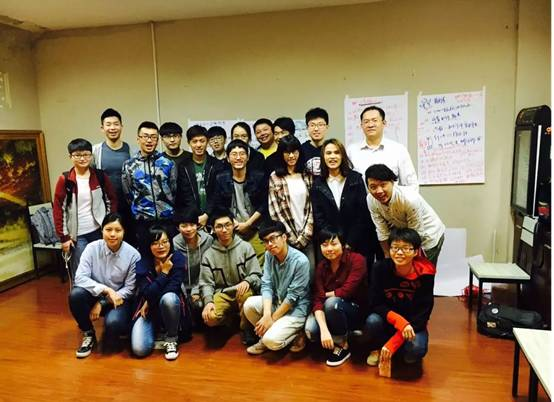
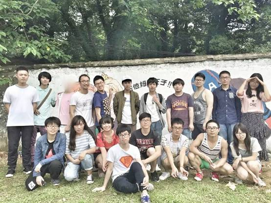
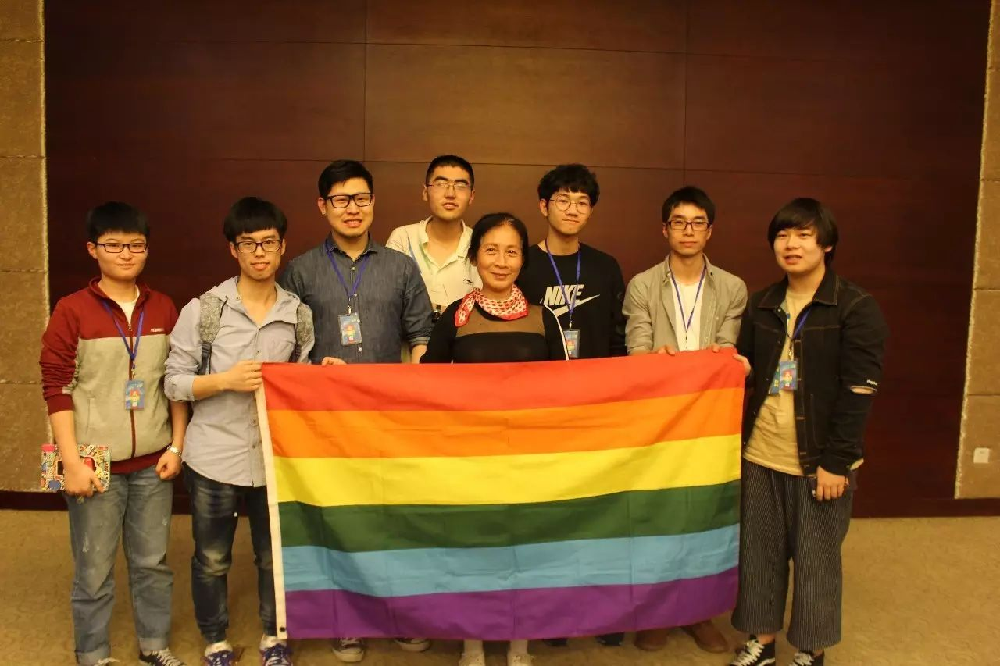

六大小组简介 | 一起来愉♀快地玩♂耍叭
论坛工作部门分为六个小组，每个小组的工作重心各有侧重，但缺一不可。只要你是愿意加入我们，在推动学生LGBT平权事业上与我们一路同行的靠谱小伙伴，就是我们所期待的你！
想和我们一起愉快地玩耍？看看哪个小组才是你的真爱呢。

倡导组
【倡导组是什么】
哈喽，这里是倡导组。
论坛本没有倡导组。由于历史原因，论坛以往都是着重于内部的社群建设。但在“人人都想搞大新闻”的大背景下，2016年2月，论坛成立了倡导组。志愿者们通过举办讲座、涂鸦等向公众发声，从教科书项目、教师游说项目入手推进友好校园环境建设，倡导多元性别和平等理念，培育有志青年参与同志公益活动。
【倡导组都做了哪些事情】
哈哈，2016年上半年，倡导组的志愿者们可是做了很多事情呢！
1.参与教科书项目并承办了教科书工作坊
我们和来自全国各地的公益小伙伴一起，商量着如何推进“恐同教科书”的更新换代。值得一提的是，倡导组负责承办了教科书工作坊，这也使得酷儿论坛为学生同志公益圈所熟悉。

2.倡导组策划举办了第一次“杭州高校多元性别工作坊”，吸引了20余位来自杭州地区的高校大学生参加培训。
3.倡导组组员雨林策划了冒刺传统项目：骄傲涂鸦
视频&多图 | 冒刺2016骄傲月涂鸦at工大！（点蓝字可跳转至相关文章）


当然也别忘了五月份在浙大紫金港举办的戏剧工作坊！
如何扮演白莲花和杜海涛？｜戏剧工作坊总结（点蓝字可跳转至相关文章）
【加入倡导组我会获得什么？】
首先你会接触并认识一大堆同志公益圈的圈内人（网红啊什么的），培养自己的多元性别意识，开阔视野；你还有机会获得宝贵的培训机会（我才不会告诉你
最重要的是你将获得行动中的快感！
【我想加入倡导组！】
如果你有基本的性/别意识，或者愿意接触学习多元性别理论的
有较强的行动力并且愿意花一定时间的
擅长策划
自我感觉良好 自我保护意识较强
不怕出柜的（当然我们也欢迎友同直人~）
有较强行动力的
有较强行动力的
有较强行动力的
并且真的想为杭州高校同志群体做一些不一样的事情的话
那就加入倡导组吧！

行政组
【行政组在做什么】
行政組的日常就是辅助大家的工作，安排和通知每周的例会，内设财务以及人力部门。
【为什么你一定要加入行政组！】
行政吧是一个很枯燥的事情 但不代表是一个很枯燥的部门~ 虽然自身没有什么很大的活动产出 但是是最靠谱的别组活动机动队和坚实的后盾与其余组同进退 行政嘛 是一个一直在跟人打交道的部门~很好的能锻炼你与人处事的能力 让你多多了解团队中和你有交集的每个人发现大家的可爱之处 也许你是一个活动家 也是一个玩咖 但这并不是一个你不选行政部的理由 相反那种积极参与的态度 是我们每个组别最大的战力 。而且不觉得行政听起来是最cool的嘛✧ʕ̢̣̣̣̣̩̩̩̩·͡˔·ོɁ̡̣̣̣̣̩̩̩̩✧。

文化组
【文化组在做什么】
文化组负责周常活动的组织（冒刺桌游、冒刺影院等）并与其他小组一起参与大型活动的筹备。
周常活动是酷儿论坛重要的收入来源之一，加入文化组，你将能够亲自组织活动，与大家一起共度难忘的时光。
【我们欢迎这样的你】
有一定的组织活动能力或经验，愿意参与周常活动的组织和大型活动的筹备工作。
对桌游有些了解（组织桌游活动）、对电影有些研究（挑选并组织电影讨论）、对一本书有独到的见解（组织读书会）或者对音乐有特别的爱好（组织音乐节）等等，都欢迎来到文化发挥自己的优势。

健康组
【健康组在做什么】
1.举办各类性别、疾病相关讲座。
过去的一年中，我们于2015年10月举办了彭晓辉教授性学沙龙
关于性，你可能想知道这些——彭晓辉教授沙龙（点蓝字可跳转至相关文章）
12月与疾控中心联合举办青春零艾滋讲座
青春零艾滋|浙江大学世界艾滋病日宣传讲座与“艾滋徒步”项目负责人“流逝”报告分享会（点蓝字可跳转至相关文章）
2016年4月举办吴幼坚“爱是最美的彩虹”公益讲座

酷儿论坛的志愿者与吴幼坚的合照
2.组织各类趣味活动，提高社群对艾滋病话题的了解程度。通过检测趴、防艾桌游设计大赛等活动实现浸入式的科普教育与意识提升。
3.与疾控中心合作，进行艾滋流动唾液检测和问卷调查，制作高校防艾宣传视频。
【加入健康组，你能收获】
对艾滋病等疾病最新资讯、研究成果的了解
对社群中艾滋病感染者与携带者的关怀与帮助
为消除恐艾情绪进而实现内部平权而努力的成就感
为学生群体中艾滋检测与防治工作的贡献

媒体组
【媒体组在做什么】
媒体组负责宣传平台运营，主要是论坛日常维护工作、微博/微信/QQ宣传平台的内容更新与日常维护，品牌推广和社群运营。
A 微信有论坛的吉祥物（？）AI苦瓜君瓜瓜的后台运营，微信公众号的后台运营（编辑排版、回复留言等工作），推送原创内容的产出。
原创内容可以是性/别方面相关的任何东西。
在节日的时候会推送相关的内容，如：11月20日，国际跨性别日（点蓝字可跳转至相关文章）
和性/别相关的音乐，如：Les音乐 | 本来我是悲壮的赴死，现在踩着小碎步跳入棺材（点蓝字可跳转至相关文章）
和性/别相关的电影，如：行走属于自己的路Stand Up and You'll Go Far！（点蓝字可跳转至相关文章）
性/别相关的翻译，如：性别姜饼人v3.3的翻译与美工

B 微博主要同步微信的推送，同时可以转发一些别的组织的内容。
【在媒体组，你收获了什么？】
文文：在媒体组工作了一年，从一开始的翻译到后来写一些推荐、科普文章，最大的收获是性/别的基础知识，对很多事能够以性/别的视角去看待，在写文章的过程中也对零散的知识进行了很好的整理。最重要的一点是，你做的这些事情你看得到改变，至少会有一个记录，感觉很有收获，自己的付出得到了肯定那种满足感。
还有的收获就是专业技能的提升啦，加入媒体组之前真的是一个完全小白，现在微信推文的排版编辑都轻松掌握啦，也能进行一些简单的文章的书写。（做翻译对英语水平的提升真的很有帮助2333）而且你也可以把自己平时很难找到同好的东西发出来（嗯我就是这么做的虽然很少有人看qvq）
艹姐姐：“亲爱的文案你写了吗？” “插图你做了吗？”“版你排了吗？”“要过12点了！你怎么还没推？”“浪蛙你在哪？（手动微笑）”……在这里不仅能接触各种科普和羞羞的活动资讯，还可以提早适应新媒体大坑，为以后实习／工作的加班生活做好充分的身理／心理准备。
【我们期待这样的你】
具备一定的相关专业技能
（如摄影、PS、视频剪辑制作等）
如果你有线上平台的运营经验会很加分
当然你有原创内容的产出能力也十分欢迎

心理组
【心理组在做什么？】
1.热线
论坛开设支持性热线（非专业心理热线），由论坛志愿者轮流值班进行热线接听；
通过公众号、微博、QQ、微信官方号等渠道进行不即时的双盲咨询；通过各平台收集信息后，由咨询师进行解答，并通过公众号、微博推送解答；
2.去病理化倡导
进行同志友善心理咨询师培训；通过心理机构、心理学系、医院建立友善咨询师网络策划
3.团体辅导
举办各式各样的心理咨询讲座和心理沙龙
【我们期待这样的你！】
1.心理相关专业和/或医学专业佳
2.有二级/三级或准备考证者
3.有相关实践经验如专业机构实习/工作经验者佳
4.其他对心理方面感兴趣愿意接受进一步培训的小伙伴
5.三观正，最基本

特别招募
我们正在寻找一位负责论坛财务的小伙伴！
如果你有着财务/金融/会计的相关专业背景及知识，欢迎你加入我们，成为论坛的财务担当～

【关于你】
无论在哪个小组，我们都希望你
1、 对性少数群体友好，有一颗多元和包容的心；
2、 有一定的性/性别、性取向相关知识；
3、 对同志公益有热心，有平等权益的意识，认同我们的愿景；
4、 有较强的责任心，能够承受工作压力；
5、 有一定的合作能力，能够配合他人工作；
6、 和大家成为朋友；
7、 勇于挑战，乐于学习和尝试（这里的工作对很多人都是未知领域）；
8、 主要居住在杭州（除非是只在线上工作的职位）；
我们不限定你的性别、性取向、职业、年龄等个人身份；
如果你有心理学、社会学、管理学、法学的专业背景，或是网站运营、传媒、NGO的职业经历，会加分很多哦~
同时，论坛能带给你
1、 结识一群朋友，获得一段美好的回忆；
2、 参与同志公益，为性少数群体服务、发声；
3、 获得志愿者培训，了解民间NGO的工作方式；
4、 提高工作能力，积累不同的工作经验，提升个人素养；
5、 充实业余生活；
【咨询】
欢迎邮件联系jasperrwongg@gmail.com（丸子）或加入招新咨询群

2016MOTSS志愿者招新咨询群
扫描下方的二维码或点击“阅读原文”即可填写报名表

报名表